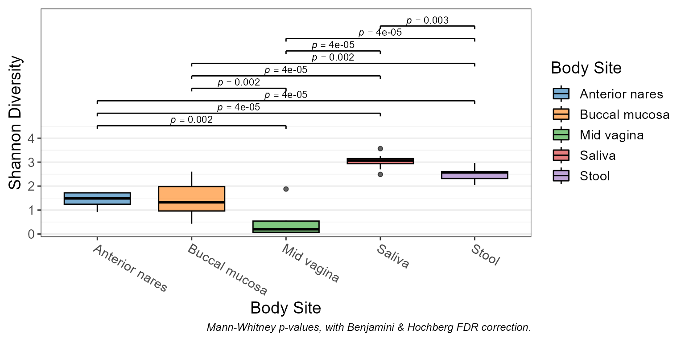
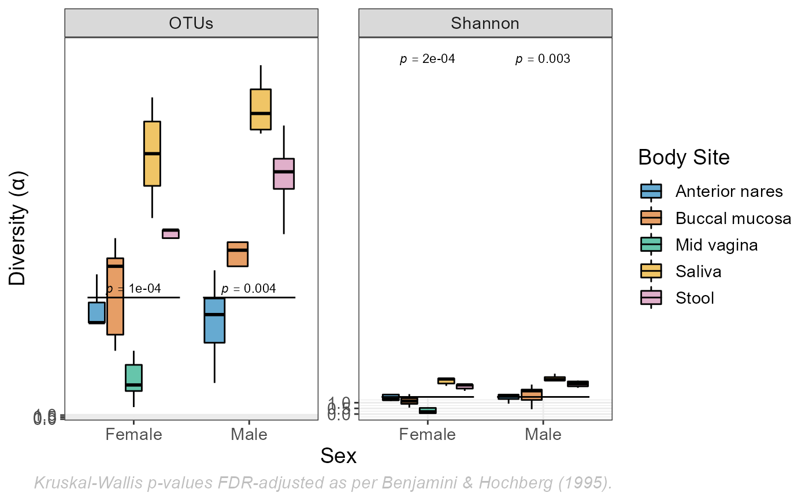
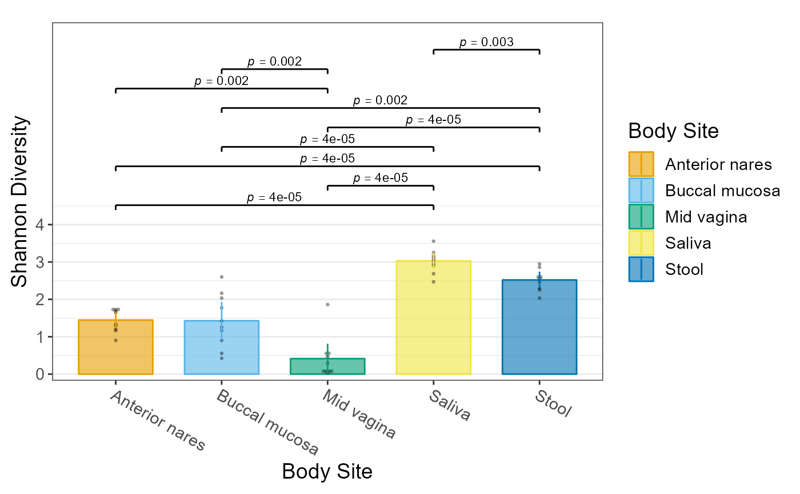

Visualize alpha diversity with boxplots.
Usage
adiv_boxplot(
biom,
x = NULL,
adiv = "Shannon",
layers = "bld",
color.by = NULL,
pattern.by = NULL,
shape.by = NULL,
facet.by = NULL,
limit.by = NULL,
flip = FALSE,
stripe = NULL,
p.adj = "fdr",
p.label = 0.05,
ci = "ci",
level = 0.95,
outliers = NULL,
xlab.angle = "auto",
caption = TRUE,
...
)Arguments
- biom
An rbiom-class object, or data coercible with
as_rbiom().- x
A categorical metadata column name to use for the x-axis. The default,
NULL, groups all samples into a single category.- adiv
Alpha diversity metric(s) to use. Options are:
"OTUs","Shannon","Chao1","Simpson", and/or"InvSimpson". Setadiv=".all"to use all metrics. Default:"Shannon"
Multiple values allowed. Non-ambiguous abbreviations are allowed.- layers
"bar","box" ("x"),"violin","dot","strip","crossbar","errorbar","linerange", and"pointrange". Single letter abbreviations are also accepted. For instance,c("box", "dot")is equivalent toc("x", "d")and"xd". Seevignette("boxplots")for examples of each. Default:"bld".- color.by, pattern.by, shape.by, facet.by, limit.by
Metadata columns to use for aesthetics and partitioning. Default:
NULL- flip
Transpose the axes, so that taxa are present as rows instead of columns. Default:
FALSE- stripe
Shade every other x position. Default: same as flip
- p.adj
Method to use for multiple comparisons adjustment of p-values. Run
p.adjust.methodsfor a list of available options. Default:"fdr"- p.label
Minimum adjusted p-value to display on the plot with a bracket.
p.label = 0.05- Show p-values that are <= 0.05.p.label = 0- Don't show any p-values on the plot.p.label = 1- Show all p-values on the plot.
If a numeric vector with more than one value is provided, they will be used as breaks for asterisk notation. Default:
0.05- ci
How to calculate min/max of the crossbar, errorbar, linerange, and pointrange layers. Options are:
"ci"(confidence interval),"range","sd"(standard deviation),"se"(standard error), and"mad"(median absolute deviation). The center mark of crossbar and pointrange represents the mean, except for code"mad" in which case it represents the median. Default:"ci"- level
The confidence level for calculating a confidence interval. Default:
0.95- outliers
Show boxplot outliers?
TRUEto always show.FALSEto always hide.NULLto only hide them when overlaying a dot or strip chart. Default:NULL- xlab.angle
Angle of the labels at the bottom of the plot. Options are
"auto",'0','30', and'90'. Default:"auto".- caption
Add methodology caption beneath the plot. Default:
TRUE- ...
Parameters are matched to formal arguments of ggplot2 functions. Prefixing parameter names with a layer name ensures that a particular parameter is passed to, and only to, that layer. For instance,
dot.size = 2ord.size = 2ensures only the dotplot layer has its size set to2. The special prefixpt.will control both the dot and strip layers.
Value
A ggplot2 plot.
The computed data points, statistics,
and ggplot command are available as $data, $stats, and
$code, respectively.
See also
Other alpha_diversity:
adiv_corrplot(),
adiv_stats(),
adiv_table()
Other visualization:
adiv_corrplot(),
bdiv_boxplot(),
bdiv_heatmap(),
bdiv_ord_plot(),
plot_heatmap(),
rare_barplot(),
rare_corrplot(),
rare_multiplot(),
taxa_barplot(),
taxa_boxplot(),
taxa_corrplot(),
taxa_heatmap()
Examples
library(rbiom)
biom <- rarefy(hmp50)
adiv_boxplot(biom, x="Sex", adiv=c("otu", "shan"), color.by="Body Site")

adiv_boxplot(biom, x="body", adiv=".all", layers="p", color.by="sex", flip=TRUE)

adiv_boxplot(biom, x="Body Site", color.by="Body Site")

# Each plot object includes additional information.
fig <- adiv_boxplot(biom, x="Body Site")
## Computed Data Points -------------------
fig$data
#> # A tibble: 49 × 6
#> .sample .depth .adiv .diversity `Body Site` .group
#> * <chr> <dbl> <fct> <dbl> <fct> <chr>
#> 1 HMP01 1183 Shannon 1.76 Buccal mucosa Buccal mucosa
#> 2 HMP02 1183 Shannon 2.60 Buccal mucosa Buccal mucosa
#> 3 HMP03 1183 Shannon 2.92 Saliva Saliva
#> 4 HMP04 1183 Shannon 3.26 Saliva Saliva
#> 5 HMP05 1183 Shannon 1.40 Buccal mucosa Buccal mucosa
#> 6 HMP06 1183 Shannon 3.03 Saliva Saliva
#> 7 HMP07 1183 Shannon 1.24 Buccal mucosa Buccal mucosa
#> 8 HMP08 1183 Shannon 2.49 Saliva Saliva
#> 9 HMP09 1183 Shannon 3.56 Saliva Saliva
#> 10 HMP10 1183 Shannon 1.72 Anterior nares Anterior nares
#> # ℹ 39 more rows
## Statistics Table -----------------------
fig$stats
#> # Test: wilcox.test(.diversity ~ `Body Site`).
#> # A tibble: 10 × 8
#> `Body Site` .n .stat .estimate .lower .upper .p.val .adj.p
#> <fct> <dbl> <dbl> <dbl> <dbl> <dbl> <dbl> <dbl>
#> 1 Anterior nares - Buccal … 20 51 0.0129 -0.515 0.584 9.71e-1 9.71e-1
#> 2 Anterior nares - Mid vag… 20 90 1.16 0.771 1.56 1.5 e-3 1.87e-3
#> 3 Anterior nares - Saliva 20 0 -1.54 -1.87 -1.31 1.08e-5 4.34e-5
#> 4 Anterior nares - Stool 19 0 -1.09 -1.35 -0.783 2.17e-5 4.34e-5
#> 5 Buccal mucosa - Mid vagi… 20 90 1.07 0.381 1.69 1.5 e-3 1.87e-3
#> 6 Buccal mucosa - Saliva 20 1 -1.68 -2.19 -0.982 2.17e-5 4.34e-5
#> 7 Buccal mucosa - Stool 19 8 -1.16 -1.7 -0.447 1.45e-3 1.87e-3
#> 8 Mid vagina - Saliva 20 0 -2.71 -3.04 -2.41 1.08e-5 4.34e-5
#> 9 Mid vagina - Stool 19 0 -2.23 -2.52 -1.93 2.17e-5 4.34e-5
#> 10 Saliva - Stool 19 80 0.526 0.186 0.824 2.99e-3 3.32e-3
## ggplot2 Command ------------------------
fig$code
#> ggplot(data) +
#> geom_rect(
#> mapping = aes(xmin = -Inf, xmax = Inf, ymin = 4.52, ymax = Inf),
#> color = NA,
#> fill = "white" ) +
#> geom_bar(
#> mapping = aes(x = `Body Site`, y = .diversity),
#> stat = "summary",
#> alpha = 0.6,
#> fun = "mean" ) +
#> ggbeeswarm::geom_beeswarm(
#> mapping = aes(x = `Body Site`, y = .diversity),
#> method = "center",
#> cex = 0.5,
#> corral = "random",
#> alpha = 0.4,
#> color = "black",
#> fill = "black",
#> size = 1.14,
#> stroke = 0 ) +
#> geom_linerange(
#> mapping = aes(x = `Body Site`, y = .y, ymin = .ymin, ymax = .ymax),
#> data = ~attr(., "vline") ) +
#> geom_segment(
#> mapping = aes(x = .x, xend = .xend, y = .y, yend = .yend),
#> data = ~attr(., "stat_brackets") ) +
#> geom_text(
#> mapping = aes(x = .x, y = .y, label = .label),
#> data = ~attr(., "stat_labels"),
#> parse = TRUE,
#> size = 3,
#> vjust = 0 ) +
#> labs(
#> caption = "Mann-Whitney p-values, with Benjamini & Hochberg FDR correction.",
#> y = "Shannon Diversity" ) +
#> scale_x_discrete() +
#> scale_y_continuous(
#> breaks = c(0, 1, 2, 3, 4),
#> expand = c(0.02, 0, 0.08, 0) ) +
#> theme_bw() +
#> theme(
#> text = element_text(size = 14),
#> axis.text.x = element_text(hjust = 0, vjust = 1, angle = -30),
#> panel.grid.major.x = element_blank(),
#> plot.caption = element_text(face = "italic", size = 9),
#> plot.margin = unit(x = c(0.1, 0.329, 0.1, 0.1), units = "inches") )